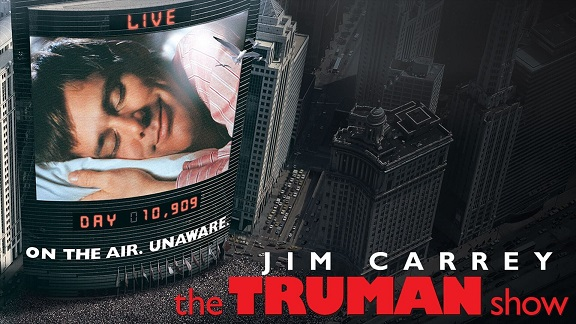

# 🎬 **Resenha Crítica – *O Show de Truman* (1998)**
# 🎬 O Show de Truman*, dirigido por Peter Weir e estrelado por Jim Carrey, é uma das obras mais instigantes do cinema contemporâneo, ao retratar com ironia e profundidade a relação entre realidade, espetáculo e controle social. Lançado em 1998, o filme antecipou discussões hoje fundamentais sobre vigilância constante, manipulação midiática e espetacularização da vida cotidiana.
# 🎬 A narrativa acompanha Truman Burbank, um homem comum que leva uma vida aparentemente perfeita em Seahaven — cidade organizada, limpa e harmônica. Aos poucos, o espectador descobre que todo esse cenário é uma gigantesca construção televisiva: Truman nasceu e cresceu dentro de um reality show transmitido 24 horas por dia, sem saber que familiares, amigos, vizinhos e colegas de trabalho são atores contratados.
# 🎬 Sua vida é inteiramente roteirizada por Christof, o criador e diretor do programa, que controla do clima até os relacionamentos do protagonista.
O ponto mais forte do filme é justamente a crítica ao poder totalitário da mídia, capaz de fabricar realidades, manipular afetos e transformar o indivíduo em objeto de consumo.
# 🎬 Truman é privado de sua autonomia e identidade, vivendo num mundo confortável, porém profundamente artificial. O público do programa — representado dentro do filme — assiste, torce e se emociona com sua vida, sem refletir sobre a ética de transformar um ser humano em entretenimento contínuo.
Jim Carrey entrega uma atuação surpreendente, equilibrando humor, ingenuidade e vulnerabilidade.
# 🎬 Ele abandona seus trejeitos cômicos tradicionais para compor um personagem sensível, que desperta empatia e compaixão, especialmente quando começa a desconfiar da farsa à sua volta. Já Ed Harris, no papel de Christof, simboliza de forma impecável a figura do “deus midiático”: alguém que se vê no direito de controlar e justificar tudo em nome da audiência.
# 🎬 Do ponto de vista visual, o filme constrói uma estética artificial de forma intencional: cores vibrantes, cenários calculadamente simétricos e um clima de “comercial de margarina” que reforçam a falsidade do mundo de Truman. A trilha sonora suave e as transições de câmera que revelam microfones escondidos e ângulos improváveis reforçam o caráter voyeurístico da narrativa.
# 🎬 Embora lançado antes da explosão dos reality shows modernos e das redes sociais, *O Show de Truman* parece dialogar diretamente com eles. Sua crítica se tornou ainda mais pertinente em uma sociedade acostumada a expor e consumir vidas em tempo real, muitas vezes sem questionar os limites éticos desse espetáculo permanente.
# 🎬 O desfecho, marcado pela célebre frase “Caso eu não os veja mais: bom dia, boa tarde e boa noite!”, simboliza a libertação de Truman e sua recusa em aceitar uma vida pré-fabricada. É uma vitória da autenticidade sobre a manipulação, da liberdade sobre o controle.
Em síntese, *O Show de Truman* é uma obra indispensável para refletir sobre o papel da mídia, a construção de identidades e os perigos da vigilância constante.
# 🎬 Combinando narrativa envolvente, crítica social e performances marcantes, o filme continua atual e relevante, oferecendo ao público uma reflexão profunda sobre a tênue fronteira entre realidade e espetáculo.
FRAME-CODE